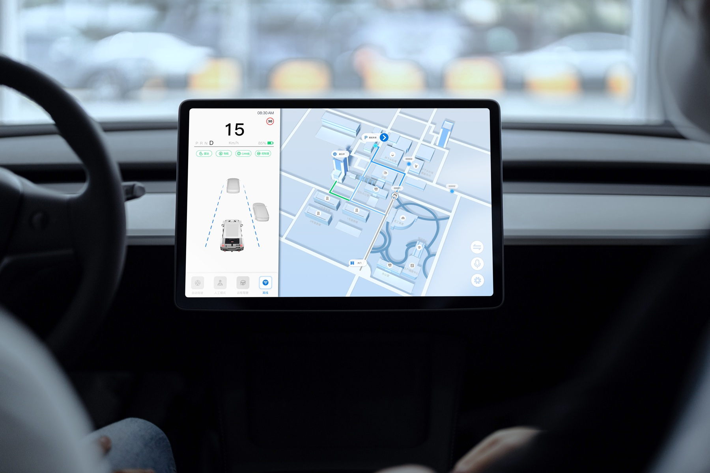

Industrial HMI / Autonomous Mining
Autonomous Mining Fleet Operations System
A tablet-based HMI for dispatching autonomous vehicles, monitoring status, handling exceptions, and completing equipment inspections in an active mining environment.
- Role
- Sole UI/UX Designer
- Evidence
- Validated on the target tablet and deployed with the project